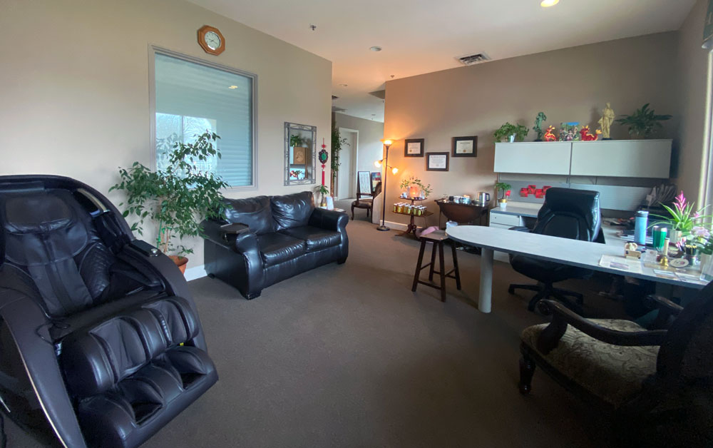
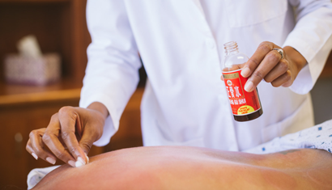
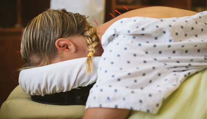
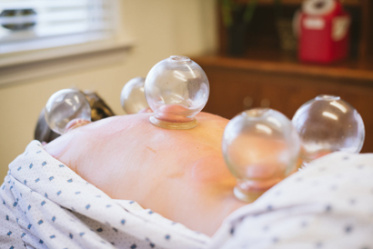
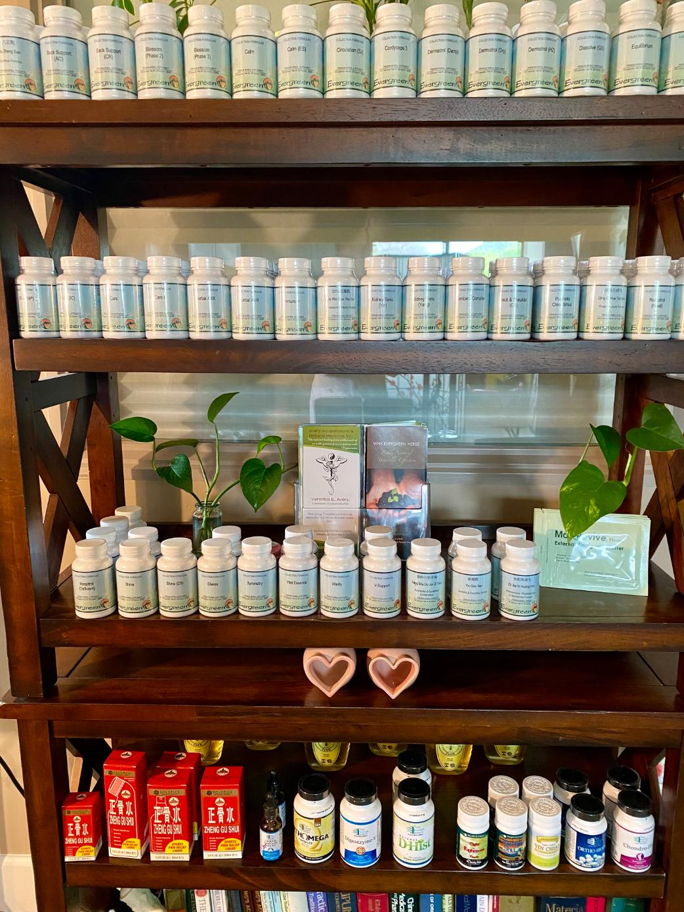
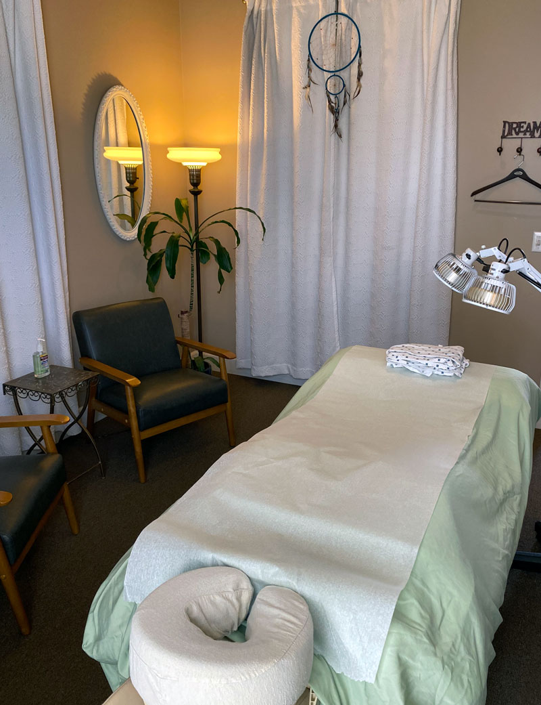

About Treatment
Expert Acupuncture Care with Veronica Avery
Comfortable and Complete Care
Treatments usually consist of acupuncture and herbal consultation, but may also include massage, electric stimulation, cupping, and recommendations for exercise and nutrition.
Please call to discuss pricing and packages (805) 400-9723 . Or, refer to our insurance and office policies .

Acupuncture
Acupuncture, cupping, and Chinese herbal medicine offer a holistic approach to health and wellness, emphasizing the importance of balance and harmony within the body. Acupuncture can help with a variety of conditions, including chronic pain, stress, anxiety, insomnia, and digestive issues. By stimulating specific points on the body, acupuncture promotes the flow of energy, or Qi, to restore balance and alleviate symptoms.


Cupping
Cupping therapy has similar benefits to a deep tissue massage. We use a traditional fire twinkling method to warm the cups and create suction. As we draw up stagnant qi and blood from the deeper layers of the muscle, we promote healthier blood flow. Improved circulation to the area can decrease inflammation, remove toxins/adhesions and relieve pain. We use a combination of rapid succession cupping, stationary cupping and moving cups.

Massage
Massage therapy offers many benefits that complement and enhance the holistic approach of acupuncture, cupping, and Chinese herbal medicine. By incorporating massage into a comprehensive treatment plan, clients can experience improved range of motion, decreased pain and inflammation, and enhanced well-being.

Herbs
Chinese herbs come in a wide variety of quality and strength. For maximum benefit, I recommend brands that are manufactured with strict quality-control guidelines, and are organic or natural when possible. I will happily guide you through your options. I offer different ways to take herbs including:
- Loose herbs simmered to make a strong, medicinal tea
- Powder or granule: just add hot water
- Tablet or Capsule
New Patients

Initial Visit
Please expect your first visit to last approximately 1.5 to 2 hours.
You will be welcomed into one of our four private treatment rooms.
We will discuss your health history and current complaints, including any Western diagnoses and lab work you may already have, as well as any current pharmaceutical drugs you’re taking.
We will arrive at a working Chinese medical diagnosis and you will receive an acupuncture treatment at this time.
In addition to our thorough consultation, you will receive treatment on your first visit.
Subsequent Visits
Follow-up appointments last approximately an hour and in addition to acupuncture, they may also include herbal consultation, massage, cupping or use of other Chinese medicinal tools. Together we will set a treatment plan that works best with your health needs and lifestyle.